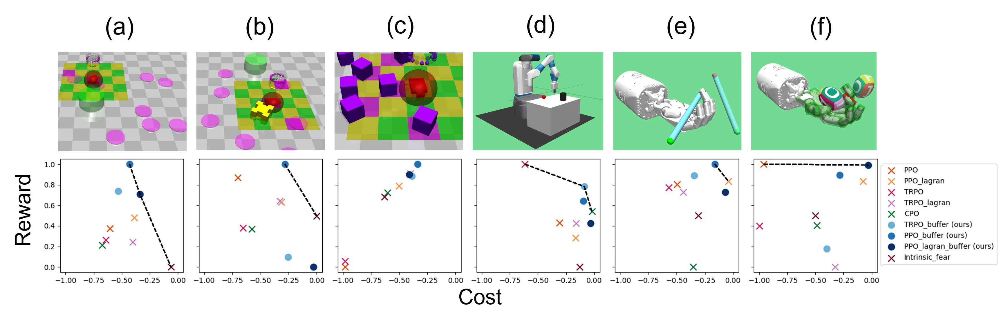

{{ page.title }}
IEEE International Conference on Robotics and Automation (ICRA 2022)
Hao-Lun Hsu1 Qiuhua Huang2 Sehoon Ha13
1 Georgia Institute of Technology 2 Pacific Northwest National Laboratory 3 Google Research

|
Abstract
One of the key challenges to deep reinforcement learning (deep RL) is to ensure safety at both
training and testing phases. In this work, we propose a novel technique of unsupervised action planning
to improve the safety of on-policy reinforcement learning algorithms, such as trust region policy optimization
(TRPO) or proximal policy optimization (PPO). We design our safety-aware reinforcement learning by storing all
the history of ``recovery'' actions that rescue the agent from dangerous situations into a separate ``safety''
buffer and finding the best recovery action when the agent encounters similar states. Because this functionality
requires the algorithm to query similar states, we implement the proposed safety mechanism using an unsupervised
learning algorithm, k-means clustering. We evaluate the proposed algorithm on six robotic control tasks that cover
navigation and manipulation. Our results show that the proposed safety RL algorithm can achieve higher rewards
compared with multiple baselines in both discrete and continuous control problems.
|
Paper: [PDF] Preprint: [arXiv] Video: [YouTube]
Workshop Page: [WIPL]
|
Bibtex
@misc{
hsu2021saferl,
author={Hao-Lun Hsu and Qiuhua Huang and Sehoon Ha},
title={Improving Safety in Deep Reinforcement Learning using Unsupervised Action Planning},
year={2021},
volume={},
number={},
keywords={Robotics; Safety RL},
}